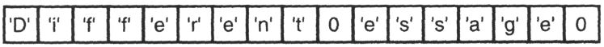

Capítulo 9 Cadenas, caracteres y bytes
La cadena es un tipo de datos importante, pero el lenguaje C no tiene un tipo de datos de cadena explícito, porque las cadenas aparecen en forma de constantes de cadena o se almacenan en matrices de caracteres. Las constantes de cadena son muy adecuadas para aquellas cadenas que el programa no las modificará. Todas las demás cadenas deben almacenarse en matrices de caracteres o memoria asignada dinámicamente (consulte el Capítulo 11). Este capítulo describe las funciones de la biblioteca para procesar cadenas y caracteres, y un conjunto de funciones relacionadas con capacidades similares que pueden manejar datos tanto de cadena como de no cadena.
9.1 Conceptos básicos de cadenas
Primero, repasemos los conceptos básicos de las cadenas. Una cadena es una cadena de cero o más caracteres y termina con un byte NUL con un patrón de bits de todos 0. Por lo tanto, los bytes NUL no pueden aparecer en los caracteres contenidos en la cadena. Esta restricción rara vez causa problemas, porque no hay ningún carácter imprimible asociado con el byte NUL, razón por la cual se seleccionó como terminador. El byte NUL es el terminador de la cadena, pero no forma parte de la cadena en sí, por lo que la longitud de la cadena no incluye el byte NUL.
El archivo de encabezado string.h contiene los prototipos y declaraciones necesarios para usar funciones de cadena. Aunque no es necesario, de hecho es una buena idea incluir este archivo de encabezado en el programa, porque con el prototipo que contiene, el compilador puede realizar mejor la verificación de errores para su programa [1] .
9.2 Longitud de la cuerda
La longitud de una cadena es el número de caracteres que contiene. Es fácil calcular la longitud de una cadena contando caracteres y el programa 9.1 lo hace. Este método de implementación ilustra el tipo de procesamiento utilizado para procesar cadenas. Sin embargo, de hecho, rara vez es necesario escribir funciones de cadena, porque las funciones proporcionadas por la biblioteca estándar generalmente pueden realizar estas tareas. Sin embargo, si aún desea escribir una función de cadena usted mismo, tenga en cuenta que el estándar reserva todos los nombres de funciones que comienzan con str para futuras expansiones de la biblioteca estándar.
El prototipo de la función de biblioteca strlen es el siguiente:
size_t strlen( char const *string );advertir:
Tenga en cuenta que strlen devuelve un valor de tipo size_t. Este tipo se define en el archivo de encabezado stddef.h, y es un tipo entero sin signo. El uso de números sin signo en expresiones puede generar resultados impredecibles. Por ejemplo, las siguientes dos expresiones parecen ser iguales:
if( strlen( x ) >= strlen( y ) ) ...
if( strlen( x ) – strlen( y ) >= 0 ) ...Pero de hecho no son iguales. La primera declaración funcionará como esperaba, pero el resultado de la segunda declaración siempre será verdadero. El resultado de strlen es un número sin signo, por lo que la expresión en el lado izquierdo del operador> = también será un número sin signo, y un número sin signo nunca puede ser negativo.
/*
** 计算字符串参数的长度。
*/
#include <stddef.h>
size_t
strlen( char const *string )
{
int length;
for( length = 0; *string++ != '\0'; )
length += 1;
return length;
}Procedimiento 9.1 Longitud de la cadena
strlen.c
advertir:
Si la expresión contiene números con y sin signo, puede producir resultados extraños. Al igual que el par de declaraciones anterior, las dos declaraciones siguientes no son iguales por la misma razón.
if( strlen( x ) >= 10 ) ...
if( strlen( x ) – 10 >= 0 ) ...Si lanza el valor de retorno de strlen a int, puede eliminar este problema.
insinuación:
Probablemente desee escribir la función strlen usted mismo, use la declaración de registro de manera flexible y algunos trucos inteligentes para hacerla más eficiente que la versión de la función de biblioteca. Esto es ciertamente una tentación, pero de hecho rara vez se logra. Las funciones de biblioteca estándar a veces se implementan en lenguaje ensamblador, el propósito es hacer un uso completo de las instrucciones especiales de manipulación de cadenas proporcionadas por algunas máquinas, para lograr la máxima velocidad. Incluso en una máquina sin tales instrucciones especiales, será mejor que dedique más tiempo a mejoras de algoritmos en otras partes del programa. Encontrar un algoritmo mejor es más eficiente que mejorar un algoritmo deficiente, y reutilizar el software existente es más eficiente que desarrollar uno nuevo.
9.3 Funciones de cadena no restringidas
Las funciones de cadena más utilizadas son "no restringidas", es decir, solo buscan el byte NUL al final del parámetro de cadena para determinar su longitud. Estas funciones generalmente especifican un bloque de memoria para almacenar la cadena de resultados. Al utilizar estas funciones, el programador debe asegurarse de que la cadena resultante no desborde esta memoria. Al discutir cada función en detalle en esta sección, discutiré este tema con más detalle.
9.3.1 Copiar cadena
La función utilizada para copiar cadenas es strcpy, y su prototipo es el siguiente:
char *strcpy( char *dst, char const *src );Esta función copia la cadena src del parámetro al parámetro dst. Si los parámetros src y dst se superponen en la memoria, el resultado no está definido. Dado que se modificará el parámetro dst, debe ser una matriz de caracteres o un puntero a una matriz de memoria asignada dinámicamente, y no se pueden utilizar constantes de cadena. El valor de retorno de esta función se describirá en la sección 9.3.3.
El contenido anterior del parámetro de destino se sobrescribirá y se perderá. Incluso si la nueva cadena es más corta que la memoria original de dst, dado que la nueva cadena termina con un byte NUL, los últimos caracteres de la cadena anterior se eliminarán efectivamente.
Considere el siguiente ejemplo:
Si la condición es verdadera y la copia se ejecuta con éxito, la matriz contendrá lo siguiente:

Las funciones de cadena ya no pueden acceder a los caracteres después del primer byte NUL, por lo que, desde cualquier punto de vista realista, ya están perdidos.
advertir:
El programador debe asegurarse de que el espacio de la matriz de caracteres de destino sea suficiente para acomodar la cadena de caracteres que se va a copiar. Si la cadena es más larga que la matriz, los caracteres adicionales aún se copian y sobrescribirán el valor almacenado originalmente en el espacio de memoria detrás de la matriz. strcpy no puede resolver este problema porque no puede determinar la longitud de la matriz de caracteres de destino.
P.ej:
char message[] = "Original message";
...
strcpy( message, "A different message" );La segunda cadena es demasiado larga para caber en la matriz de caracteres del mensaje. Por lo tanto, la función strcpy ocupará parte del espacio de memoria detrás de la matriz y sobrescribirá las variables que se almacenaron allí. Si se asegura de que el parámetro de destino sea lo suficientemente grande para contener la cadena de origen antes de usar esta función, puede evitar mucho trabajo de depuración.
9.3.2 Cadena de conexión
Para agregar (concatenar) una cadena al final de otra cadena, puede usar la función strcat. Su prototipo es el siguiente:
char *strcat( char *dst, char const *src );La función strcat requiere que el parámetro dst contenga una cadena (puede ser una cadena vacía). Encuentra el final de la cadena y agrega una copia de la cadena src a esta posición. Si las posiciones de src y dst se superponen, el resultado es indefinido.
El siguiente ejemplo muestra un uso común de esta función.
El parámetro de cadena de cada función strcat se agrega a la cadena que existía originalmente en la matriz de mensajes. El resultado es la siguiente cadena:
Hello Jim, how are you?advertir:
Como antes, el programador debe asegurarse de que el espacio restante en la matriz de caracteres de destino sea suficiente para almacenar toda la cadena de origen. Pero esta vez, en lugar de simplemente comparar la longitud de la cadena de origen con la longitud de la matriz de caracteres de destino, debe considerar la cadena que existía originalmente en la matriz de destino.
9.3.3 Valor de retorno de la función
Tanto strcpy como strcat devuelven una copia de su primer parámetro, que es un puntero a la matriz de caracteres de destino. Debido a que devuelven este tipo de valor, puede llamar a estas funciones anidadas, como se muestra en el siguiente ejemplo:
strcat( strcpy( dst, a ), b );strcpy se ejecuta primero. Copia la cadena de a a dst y devuelve dst. Luego, este valor de retorno se convierte en el primer parámetro de la función strcat, y la función strcat agrega b al final de dst.
Este estilo de llamada anidado no tiene ninguna ventaja funcional sobre el siguiente estilo más legible.
strcpy( dst, a );
strcat( dst, b );De hecho, en la gran mayoría de las llamadas a estas funciones, sus valores de retorno simplemente se ignoran.
9.3.4 Comparación de cadenas
La comparación de dos cadenas implica comparar los caracteres correspondientes a las dos cadenas, uno por uno, hasta encontrar una falta de coincidencia. La cadena que contiene el carácter "más pequeño" (es decir, el número ordinal en el conjunto de caracteres) del primer carácter no coincidente se considera "más pequeña" que la otra cadena de caracteres. Si una de las cadenas es la parte anterior de otra cadena, también se considera "menor que" la otra cadena porque su byte final NUL aparece antes. Este tipo de comparación se denomina "comparación de diccionario". Para las comparaciones de cadenas que solo contienen letras mayúsculas o minúsculas, el resultado de este proceso de comparación es siempre el mismo que el de la comparación alfabética que usamos a diario.
La función de biblioteca strcmp se utiliza para comparar dos cadenas. Su prototipo es el siguiente:
int strcmp( char const *s1, char const *s2 );Si s1 es menor que s2, la función strcmp devuelve un valor menor que cero. Si s1 es mayor que s2, la función devuelve un valor mayor que cero. Si las dos cadenas son iguales, la función devuelve cero.
advertir:
Los principiantes suelen escribir expresiones como las siguientes
if( strcmp( a, b ) )Pensó que si las dos cadenas eran iguales, su resultado sería verdadero. Sin embargo, este resultado será exactamente el opuesto, porque el valor de retorno es cero (falso) si las dos cadenas son iguales. Sin embargo, probar este valor de retorno como booleano es un mal estilo porque tiene tres resultados distintos: menor que, igual a y mayor que. Entonces, una mejor manera es comparar este valor de retorno con cero.
advertir:
Tenga en cuenta que el estándar no especifica valores específicos para indicar desigualdad. Simplemente dice que si la primera cadena es mayor que la segunda cadena, devuelve un valor mayor que cero, y si la primera cadena es menor que la segunda cadena, devuelve un valor menor que cero. Un error común es pensar que el valor de retorno es 1 y -1, que representan mayor que y menor que, respectivamente. Pero esta suposición no siempre es correcta.
advertir:
Dado que strcmp no modifica ninguno de sus parámetros, no hay peligro de desbordar la matriz de caracteres. Sin embargo, al igual que otras funciones de cadena no restringidas, el parámetro de cadena de la función strcmp también debe terminar con un byte NUL. Si este no es el caso, strcmp puede comparar los bytes después del parámetro, y el resultado de esta comparación no tendrá sentido.
9.4 Funciones de cadena con longitud limitada
La biblioteca estándar también contiene funciones que manejan cadenas de una manera diferente. Estas funciones aceptan un parámetro de longitud explícito para limitar el número de caracteres que se copiarán o compararán. Estas funciones proporcionan un mecanismo conveniente para evitar que las cadenas largas e impredecibles se desborden de sus matrices de destino.
Los prototipos de estas funciones se muestran a continuación. Al igual que con sus versiones sin restricciones, si los parámetros de origen y destino se superponen, los resultados de strncpy y strncat no están definidos.
Al igual que strcpy, strncpy copia los caracteres de la cadena de origen en la matriz de destino. Sin embargo, siempre escribe exactamente len caracteres en dst. Si el valor de strlen (src) es menor que len, la matriz dst se llena hasta la longitud de len con bytes NUL adicionales. Si el valor de strlen (src) es mayor o igual que len, solo se copian los caracteres len en dst. ¡Aviso! Su resultado no terminará con un byte NUL .
advertir:
El resultado de la llamada strncpy puede no ser una cadena, por lo que la cadena debe terminar con un byte NUL. ¿Qué sucede si una secuencia de caracteres que no termina con un byte NUL se usa en un lugar donde se requiere una cadena (como el parámetro de la función strlen)? La función strlen no sabrá si no hay un byte NUL, por lo que continuará buscando, carácter por carácter, hasta que encuentre un byte NUL. Tal vez se necesitaron algunos cientos de caracteres para encontrarlo, y el valor de retorno de la función strlen es esencialmente un número aleatorio. O, si la función intenta acceder a un rango de memoria fuera del sistema asignado a este programa, el programa se bloqueará.
advertir:
Este problema solo ocurre cuando usa la función strncpy para crear cadenas y luego usa las funciones de biblioteca que comienzan con str en ellas, o las imprime usando el código de formato% s en printf. Antes de usar funciones no restringidas, primero debe asegurarse de que la cadena realmente termine con un byte NUL. Por ejemplo, considere el siguiente fragmento de código:
Si el contenido de name puede estar contenido en el búfer, la última instrucción de asignación no tiene ningún efecto. Sin embargo, si el nombre es demasiado largo, esta declaración de asignación puede garantizar que la cadena en el búfer termine con NUL. En el futuro, el uso de strlen u otras funciones de cadena no restringidas en esta matriz funcionará correctamente.
Aunque strncat también es una función de longitud limitada, es diferente de strncpy. Copia como máximo len caracteres de src a la parte posterior de la matriz de destino. Sin embargo, strncat siempre agrega un byte NUL después de la cadena de resultado, y no llenará la matriz de destino con bytes NUL como strncpy. Tenga en cuenta que la cadena original en la matriz de destino no se incluye en la longitud de strncat. strncat copia como máximo los caracteres len (más un byte NUL de terminación) en la matriz de destino, y no le importa si el espacio que queda después de eliminar el parámetro de destino de la cadena original es suficiente.
Finalmente, strncmp también se usa para comparar dos cadenas, pero compara como máximo len bytes. Si dos cadenas tienen caracteres desiguales antes del carácter lenth, esta función detiene la comparación como strcmp y devuelve el resultado. Si los primeros caracteres len de las dos cadenas son iguales, la función devuelve cero.
9.5 Conceptos básicos de la búsqueda de cadenas
Hay muchas funciones en la biblioteca estándar que utilizan varios métodos para encontrar cadenas. Estas diversas herramientas dan a los programadores de C mucha flexibilidad.
9.5.1 Encontrar un personaje
La forma más fácil de encontrar un carácter específico en una cadena es usar las funciones strchr y strrchr. Sus prototipos son los siguientes:
Tenga en cuenta que su segundo parámetro es un valor entero. Sin embargo, contiene un valor de carácter. strchr encuentra la posición de la primera aparición del carácter ch en la cadena str, y la función devuelve un puntero a esa posición después de encontrarla. Si el carácter no existe en la cadena, la función devuelve un puntero NULL. La función de strrchr es básicamente la misma que strchr, excepto que lo que devuelve es un puntero a la última aparición del carácter en la cadena (la del extremo derecho).
Aquí hay un ejemplo:
La posición señalada por ans será la cadena + 7, porque la primera 'h' aparece en esta posición. Tenga en cuenta que hay una diferencia entre mayúsculas y minúsculas.
9.5.2 Encuentra algunos caracteres
strpbrk es una función más común. No se trata de encontrar un carácter específico, sino de encontrar la primera aparición de cualquier conjunto de caracteres en una cadena. Su prototipo es el siguiente:
char *strpbrk( char const *str, char const *group );Esta función devuelve un puntero a la posición del primer carácter en str que coincide con cualquier carácter del grupo. Si no se encuentra ninguna coincidencia, la función devuelve un puntero NULL.
En el fragmento de código a continuación,
La posición a la que apunta ans es cadena + 1, porque esta posición es la primera aparición del carácter en el segundo parámetro. Como antes, esta función también distingue entre mayúsculas y minúsculas.
9.5.3 Encontrar una subcadena
Para encontrar una subcadena en una cadena, podemos usar la función strstr, su prototipo es el siguiente:
char *strstr( char const *s1, char const *s2 );Esta función encuentra la posición inicial de la primera aparición de s2 en s1 y devuelve un puntero a esa posición. Si s2 no aparece completamente en cualquier lugar de s1, la función devolverá un puntero NULL. Si el segundo parámetro es una cadena vacía, la función devuelve s1.
No hay ninguna función strrstr o strrpbrk en la biblioteca estándar. Sin embargo, si los necesita, son muy fáciles de implementar. El programa 9.2 muestra una forma de implementar strrstr. Esta técnica también se puede utilizar para implementar strrpbrk.
/*
** 在字符串s1中查找字符串s2最右出现的位置，并返回一个指向该位置的指针。
*/
#include <string.h>
char*
my_strrstr( char const *s1, char const *s2 )
{
register char*last;
register char*current;
/*
** 把指针初始化为我们已经找到的前一次匹配位置。
*/
last = NULL;
/*
**只在第2个字符串不为空时才进行查找，如果S2为空，返回NULL。
*/
if( *s2 != '\0' ){
/*
** 查找s2在s1中第1次出现的位置。
*/
current = strstr( s1, s2 );
/*
** 我们每次找到字符串时，让指针指向它的起始位置。然后查找该字符串下一个匹配位置。
*/
while( current != NULL ){
last = current;
current = strstr( last + 1, s2 );
}
}
/* 返回指向我们找到的最后一次匹配的起始位置的指针。*/
return last;
}Programa 9.2 Encontrar la ocurrencia más a la derecha de una subcadena
mstrrstr.c
9.6 Búsqueda avanzada de cadenas
El siguiente conjunto de funciones simplifica el proceso de buscar y extraer una subcadena de una cadena.
9.6.1 Buscar un prefijo de cadena
Las funciones strspn y strcspn se utilizan para contar caracteres al comienzo de una cadena. Sus prototipos son los siguientes:
size_t strspn( char const *str, char const *group );
size_t strcspn( char cosnt *str, char const *group );La cadena de grupo especifica uno o más caracteres. strspn devuelve el número de caracteres que coinciden con cualquier carácter del grupo al principio de str. Por ejemplo, si el grupo contiene caracteres en blanco como espacios y tabulaciones, esta función devolverá el número de caracteres en blanco al principio de str. El siguiente carácter de str es su primer carácter que no está en blanco.
Considere el siguiente ejemplo:

Por supuesto, el área del búfer del búfer no se inicializará con este método en circunstancias normales. Contendrá los datos leídos en tiempo de ejecución. Pero después de tener este valor en el búfer, la variable len1 se establecerá en 2 y la variable len2 se establecerá en 11. El siguiente código calculará un puntero al primer carácter que no esté en blanco en la cadena.
ptr = buffer + strspn( buffer, "\n\r\f\t\v" );La función strcspn es lo opuesto a la función strspn y cuenta los caracteres en la parte inicial de la cadena str que no coinciden con ningún carácter del grupo. La letra c en el nombre strcspn proviene del concepto de complementar un conjunto de caracteres, es decir, reemplazar estos caracteres con caracteres que antes no existían. Si usa "\ n \ r \ f \ t \ v" como parámetro de grupo, esta función devolverá el valor de todos los caracteres que no están en blanco al comienzo de la primera cadena de parámetro.
9.6.2 Encuentra la marca
Una cuerda a menudo contiene varias partes separadas, que están separadas entre sí. Para procesar estas partes cada vez, primero debe extraerlas de la cadena.
Esta tarea es exactamente lo que logra la función strtok. Aísla las partes individuales llamadas tokens de la cadena y descarta el separador. Su prototipo es el siguiente:
char *strtok( char *str, char const *sep );El parámetro sep es una cadena que define el conjunto de caracteres utilizados como separador. El primer parámetro especifica una cadena que contiene cero o más tokens separados por uno o más separadores en la cadena sep. strtok encuentra el siguiente token de str, lo termina con NUL y devuelve un puntero a este token.
advertir:
Cuando la función strtok realiza su tarea, modificará la cadena que maneja. Si la cadena de origen no se puede modificar, haga una copia y pase esta copia a la función strtok.
Si el primer parámetro de la función strtok no es NULL, la función encontrará el primer token de la cadena. strtok también guardará su posición en la cadena. Si el primer parámetro de la función strtok es NULL, la función busca el siguiente token en la misma cadena comenzando desde la posición guardada como antes. Si no hay más tokens en la cadena, la función strtok devuelve un puntero NULL. En un caso típico, cuando se llama a strtok por primera vez, se le pasa un puntero a una cadena. Luego, esta función se llama repetidamente (el primer parámetro es NULL) hasta que devuelve NULL.
El procedimiento 9.3 es un ejemplo breve. Esta función extrae las etiquetas de sus parámetros y las imprime (una por línea). Estas etiquetas están separadas por espacios en blanco. No se confunda con la apariencia de la declaración for. Está dividido en 3 filas porque es demasiado largo.
/*
** 从一个字符数组中提取空白字符分隔的标记并把它们打印出来（每行一个）。
*/
#include <stdio.h>
#include <string.h>
void
print_tokens( char *line )
{
static char whitespace[] = " \t\f\r\v\n";
char *token;
for( token = strtok( line, whitespace );
token != NULL;
token = strtok( NULL, whitespace ) )
printf( "Next token is %s\n", token );
}Procedimiento 9.3 Extraer la marca
token.c
Si lo desea, puede usar un conjunto diferente de separadores cada vez que llame a la función strtok. Esta técnica es útil cuando diferentes partes de una cadena están separadas por diferentes conjuntos de caracteres.
advertir:
Dado que la función strtok guarda la información del estado local de la función que maneja, no puede usarla para analizar dos cadenas al mismo tiempo. Por lo tanto, si el cuerpo del bucle for llama a una función que llama internamente a la función strtok, el programa 9.3 fallará.
9.7 Mensaje de error
Cuando llama a algunas funciones y solicita al sistema operativo que realice algunas funciones, como abrir archivos, si ocurre un error, el sistema operativo informa el código de error estableciendo una variable entera externa errno. La función strerror toma uno de los códigos de error como parámetro y devuelve un puntero a una cadena que describe el error. El prototipo de esta función es el siguiente:
char *strerror( int error_number );De hecho, el valor de retorno debe declararse como constante, porque no debe modificarlo.
9.8 Operación de caracteres
La biblioteca estándar contiene dos conjuntos de funciones para manipular caracteres individuales, sus prototipos se encuentran en el archivo de encabezado ctype.h. El primer grupo de funciones se usa para clasificar caracteres y el segundo grupo de funciones se usa para convertir caracteres.
9.8.1 Clasificación de caracteres
Cada función de clasificación acepta un parámetro entero que contiene un valor de carácter. La función prueba este carácter y devuelve un valor entero que indica verdadero o falso [2] . La Tabla 9.1 enumera estas funciones de clasificación y las pruebas realizadas por cada una de ellas.
Tabla 9.1 Funciones de clasificación de caracteres
|
función |
Si sus parámetros cumplen las siguientes condiciones, devuelve verdadero |
|---|---|
|
iscntrl |
Cualquier personaje de control |
|
espacio |
Caracteres en blanco: espacio '', avance de página '\ f', avance de línea '\ n', retorno de carro '\ r', carácter de tabulación '\ t' o carácter de tabulación vertical '\ v' |
|
isdigit |
Número decimal 0 ～ 9 |
|
isxdigit |
Números hexadecimales, incluidos todos los números decimales, letras minúsculas a ～ f, letras mayúsculas A ～ F |
|
es bajo |
Letras minúsculas a ～ z |
|
isupper |
Letras mayúsculas A ～ Z |
|
isalpha |
Letras a ～ zo A ～ Z |
|
isalnum |
Letras o números, a ～ z, A ～ Z o 0 ～ 9 |
|
ispunt |
Signos de puntuación, cualquier carácter gráfico que no sean números ni letras (símbolos imprimibles) |
|
isgrafo |
Cualquier personaje gráfico |
|
isprint |
Cualquier carácter imprimible, incluidos los caracteres gráficos y los caracteres en blanco |
9.8.2 Conversión de caracteres
La función de conversión convierte las letras mayúsculas en minúsculas o las minúsculas en mayúsculas.
int tolower( int ch );
int toupper( int ch );La función toupper devuelve la forma mayúscula correspondiente de su parámetro, y la función tolower devuelve la forma minúscula correspondiente de su parámetro. Si el parámetro de la función no es un carácter en el caso apropiado (es decir, el parámetro de toupper no es una letra minúscula o el parámetro de tolower no es una letra mayúscula), la función regresará sin modificar el parámetro.
insinuación:
Probar o manipular caracteres directamente reducirá la portabilidad del programa. Por ejemplo, considere la siguiente declaración, que intenta probar si ch es un carácter en mayúsculas.
if( ch >= 'A' && ch <= 'Z' )Esta declaración puede ejecutarse en una máquina que usa el juego de caracteres ASCII, pero fallará en una máquina que usa el juego de caracteres EBCDIC. Por otro lado, la siguiente declaración
if( isupper( ch ) )Independientemente del conjunto de caracteres que utilice la máquina, puede funcionar sin problemas.
9.9 Operación de memoria
Por definición, la cadena termina con un byte NUL, por lo que la cadena no puede contener ningún carácter NUL. Sin embargo, no es raro que los datos que no son cadenas contengan valores cero en su interior. No puede usar funciones de cadena para manejar este tipo de datos, porque dejarán de funcionar cuando encuentren el primer byte NUL.
Sin embargo, podemos usar otro conjunto de funciones relacionadas, sus operaciones son similares a las funciones de cadena, pero estas funciones pueden manejar secuencias de bytes arbitrarias. A continuación se muestran sus prototipos.
Cada prototipo contiene un parámetro explícito que indica el número de bytes que deben procesarse. Pero a diferencia de las funciones encabezadas por strn, no dejarán de funcionar cuando encuentren un byte NUL.
memcpy copia bytes de longitud desde la posición inicial de src a la posición inicial de la memoria dst. Puede utilizar este método para copiar cualquier tipo de valor. El tercer parámetro especifica la longitud (en bytes) del valor copiado. Si src y dst se superponen en cualquier forma, su resultado es indefinido.
P.ej:
char temp[SIZE], values[SIZE];
...
memcpy( temp, values, SIZE );Copia bytes SIZE de los valores de la matriz a la temperatura de la matriz.
Pero, ¿y si ambas matrices son matrices de números enteros? La siguiente declaración puede realizar esta tarea:
memcpy( temp, values, sizeof( values ) );Los primeros dos parámetros no necesitan usar conversión de tipo forzada, porque en el prototipo de la función, el tipo del parámetro es un puntero void *, y cualquier tipo de puntero se puede convertir en un puntero void *.
Si solo es necesario copiar parte del contenido de la matriz, el número de copias que se copiarán debe especificarse en el tercer parámetro. Para datos de más de un byte, asegúrese de multiplicar el número y la longitud del tipo de datos, por ejemplo:
memcpy( saved_answers, answers, count * sizeof( answers[0] ) );También puede utilizar esta técnica para copiar estructuras o matrices de estructuras.
La función memmove se comporta de manera similar a memcpy, excepto que sus operandos de origen y destino pueden superponerse. Aunque no es necesario implementarlo de la siguiente manera, el resultado de memmove es el mismo que el resultado de este método: copie el operando de origen en una ubicación temporal, esta ubicación temporal no se superpondrá con el operando de origen o destino, y luego se copia desde esta ubicación temporal al operando de destino. Memmove generalmente no se puede implementar usando instrucciones especiales de procesamiento de cadenas de bytes proporcionadas por algunas máquinas, por lo que puede ser más lento que memcpy. Sin embargo, si los parámetros de origen y destino realmente se superponen, debe usar memmove, como se muestra en el siguiente ejemplo:
memcmp compara el contenido de dos secciones de memoria, que comienzan en ayb respectivamente, y compara los bytes de longitud en total. Estos valores se comparan byte a byte según los caracteres sin signo. El tipo de retorno de la función es el mismo que el de la función strcmp: un valor negativo significa que a es menor que b, un valor positivo significa que a es mayor que b, y cero significa que a es igual ab. Dado que estos valores se comparan en función de una cadena de bytes sin firmar, si la función memcmp se usa para comparar datos que no son de un solo byte, como enteros o números de punto flotante, puede dar resultados inesperados.
memchr busca la primera aparición del carácter ch desde la posición inicial de a, y devuelve un puntero a esa posición. Busca bytes de longitud en total. Si el carácter no se encuentra en estos bytes de longitud, la función devuelve un puntero NULL.
Finalmente, la función memset establece todos los bytes de longitud comenzando desde a hasta el valor de carácter ch. P.ej:
memset( buffer, 0, SIZE );Inicialice los primeros bytes SIZE del búfer a 0.
9.10 Resumen
Una cadena es una secuencia de cero o más caracteres y la secuencia termina con un byte NUL. La longitud de una cadena es el número de caracteres que contiene. La biblioteca estándar proporciona algunas funciones para procesar cadenas, y sus prototipos se encuentran en el archivo de encabezado string.h.
La función strlen se usa para calcular la longitud de una cadena, y su valor de retorno es un entero sin signo, por lo que debe tener cuidado al usarlo en expresiones. La función strcpy copia una cadena de una ubicación a otra, y la función strcat agrega una copia de una cadena al reverso de otra cadena. Ambas funciones asumen que sus parámetros son cadenas válidas, y si la cadena de origen y la cadena de destino se superponen, el resultado de la función no está definido. strcmp compara dos cadenas en orden lexicográfico. Su valor de retorno pregunta si la primera cadena es mayor, menor o igual que la segunda cadena.
Las funciones de longitud limitada strncpy, strncat y strncmp son similares a sus correspondientes versiones sin restricciones. La diferencia es que estas funciones también aceptan un parámetro de longitud. En strncpy, la longitud especifica cuántos caracteres se escribirán en la matriz de caracteres de destino. Si la cadena de origen es más larga que la longitud especificada, la cadena de resultado no terminará con un byte NUL. El parámetro de longitud de la función strncat especifica el número máximo de caracteres copiados de la cadena de origen, pero su resultado siempre termina con un byte NUL. El parámetro de longitud de la función strcmp se utiliza para limitar el número de comparaciones de caracteres. Si dos cadenas no difieren en el número especificado, se consideran iguales.
Hay varias funciones para buscar cadenas. La función strchr encuentra la primera aparición de un carácter en una cadena. La función strrchr encuentra la última aparición de un carácter en una cadena. strpbrk busca la primera aparición de cualquier carácter en un juego de caracteres especificado en una cadena. La función strstr encuentra la primera aparición de otra cadena en una cadena.
La biblioteca estándar también proporciona algunas funciones de búsqueda de cadenas más avanzadas. La función strspn cuenta el número de caracteres cuya parte inicial de una cadena coincide con cualquier carácter de un conjunto de caracteres especificado. La función strcspn cuenta el número de caracteres cuya parte inicial de una cadena no coincide con ningún carácter de un conjunto de caracteres especificado. La función strtok divide una cadena en varios tokens. Cada vez que se llama, devuelve un puntero a la siguiente posición marcada en la cadena. Estos tokens están separados por uno o más caracteres de un juego de caracteres especificado.
strerror toma un código de error como parámetro. Devuelve un puntero a la cadena utilizada para describir el error.
La biblioteca estándar también proporciona varias funciones para probar y convertir caracteres. Los programas que utilizan estas funciones son más portátiles que los programas que realizan ellos mismos la prueba y conversión de caracteres. La función toupper convierte un carácter alfabético en minúsculas a mayúsculas, y la función tolower realiza la tarea opuesta. La función iscntrl comprueba si su parámetro es un carácter de control y la función isspace comprueba si su parámetro es un carácter en blanco. La función isdigit se usa para probar si su parámetro es un carácter de dígito decimal, y la función isxdigit es para verificar si su parámetro es un carácter de dígito hexadecimal. Las funciones islower e isupper comprueban si sus parámetros son letras mayúsculas y minúsculas, respectivamente. La función isalpha comprueba si sus parámetros son caracteres alfabéticos, la función isalnum comprueba si sus parámetros son caracteres alfabéticos o numéricos y la función ispunct comprueba si sus parámetros son caracteres de puntuación. Finalmente, la función isgraph comprueba si sus parámetros son caracteres gráficos y la función isprint comprueba si sus parámetros son caracteres gráficos o caracteres en blanco.
Las funciones memxxx proporcionan capacidades similares a las funciones de cadena, pero pueden manejar bytes arbitrarios, incluidos bytes NUL. Todas estas funciones aceptan un parámetro de longitud. memcpy copia el número de bytes especificado por el parámetro de longitud del parámetro de origen al parámetro de destino. La función memmove realiza la misma función, pero puede manejar correctamente la superposición de los parámetros de origen y destino. La función memcmp compara los bytes de dos secuencias y la función memchr busca un valor específico en una secuencia de bytes. Finalmente, la función memset inicializa una secuencia de bytes a un valor específico.
9.11 Resumen de advertencias
1. La función strlen debe usarse en expresiones que usan números con signo.
2. Mezcle números con signo y números sin signo en expresiones.
3. Utilice la función strcpy para copiar una cadena larga en una matriz más corta, provocando un desbordamiento.
4. Utilice la función strcat para agregar una cadena a una matriz, haciendo que la matriz se desborde.
5. Pruebe el valor de retorno de la función strcmp como un valor booleano.
6. Compare el valor de retorno de la función strcmp con 1 y -1.
7. Utilice secuencias de caracteres que no terminen en un byte NUL.
8. Utilice la función strncpy para generar una cadena que no termine con bytes NUL.
9. Mezcle funciones strncpy y funciones de la familia strxxx.
10. Olvídese de que la función strtok modificará la cadena que maneja.
11. La función strtok no es reentrante [3] .
9.12 Resumen de consejos de programación
1. No intente reemplazar las funciones de la biblioteca escribiendo funciones con las mismas funciones usted mismo.
2. El uso de funciones de conversión y clasificación de caracteres puede mejorar la portabilidad de las funciones.
9.13 Problema
1. El lenguaje C carece de un tipo de datos de cadena explícito. ¿Es esto una ventaja o una desventaja?
2. La función strlen devuelve una cantidad sin firmar (size_t). ¿Por qué un valor sin firmar es más apropiado que un valor con signo aquí? Pero devolver valores sin firmar en realidad tiene desventajas, ¿por qué?
3. Si las funciones strcat y strcpy devuelven un puntero al final de la cadena de destino, ¿hay alguna ventaja en comparación con devolver un puntero al principio de la cadena de destino?
4. Si copia 50 bytes de la matriz xa la matriz y, ¿cuál es la forma más sencilla?
5. Suponga que tiene una matriz llamada búfer, su longitud es BSIZE bytes, usa la siguiente declaración para copiar una cadena a esta matriz:
strncpy( buffer, some_other_string, BSIZE – 1 );¿Puede garantizar que el contenido del búfer sea una cadena válida?
6. Utilice el siguiente método
if( isalpha( ch ) ){¿Cuáles son las ventajas de reemplazar la siguiente prueba explícita?
if( ch >= 'A' && ch <= 'Z' ||
ch >= 'a' && ch <= 'z' ){7. ¿Cómo se puede simplificar el siguiente código?
for( p_str = message; *p_str != '\0'; p_str++ ){
if( islower( *p_str ) )
*p_str = toupper( *p_str );
}8. ¿Cuál es la diferencia entre las siguientes expresiones?
memchr( buffer, 0, SIZE ) – buffer
strlen( buffer )9.14 Ejercicios de programación
★ 1. Escriba un programa para leer algunos caracteres de la entrada estándar y cuente los porcentajes de los siguientes tipos de caracteres.
Carácter de control
Carácter en blanco
número
Letras minusculas
letra mayúscula
Puntuación
Caracteres no imprimibles
Utilice la función de clasificación de caracteres definida en el archivo de encabezado ctype.h.
★ 2. Escribe una función llamada my_strlen. Es similar a la función strlen, pero puede manejar la cadena creada por el uso de la función strn --- que no termina en bytes NUL. Debe pasar un parámetro a la función, y su valor es la longitud de la matriz que contiene la cadena que se va a probar para determinar la longitud.
★ 3. Escribe una función llamada my_strcpy. Es similar a la función strcpy, pero no desborda la matriz de destino. El resultado de la copia debe ser una cadena real.
★ 4. Escribe una función llamada my_strcat. Es similar a la función strcat, pero no desborda la matriz de destino. Su resultado debe ser una cadena real.
★ 5. Función de escritura
void my_strncat( char *dest, char *src, int dest_len );Se usa para conectar la cadena en src al final de la cadena original en dest, pero garantiza que no desbordará la matriz dest de longitud dest_len. A diferencia de la función strncat, esta función también considera la longitud de la cadena que existía originalmente en la matriz dest, por lo que puede garantizar que no excederá el límite de la matriz.
★ 6. Escriba una función llamada my_strcpy_end para reemplazar la función strcpy, que devuelve un puntero al final de la cadena de destino (es decir, un puntero al byte NUL) en lugar de devolver un puntero al inicio de la cadena de destino.
★ 7. Escriba una función llamada my_strrchr, su prototipo es el siguiente:
char *my_strrchr( char const *str, int ch );Esta función es similar a la función strchr, excepto que devuelve un puntero a la última posición (más a la derecha) del carácter ch en la cadena str.
★ 8. Escriba una función llamada my_strnchr, su prototipo es el siguiente:
char *my_strnchr( char const *str, int ch, int which );Esta función es similar a la función strchr, pero su tercer parámetro especifica cuántas veces aparece el carácter ch en la cadena str. Por ejemplo, si el tercer parámetro es 1, la función de esta función es exactamente la misma que strchr. Si el tercer parámetro es 2, esta función devuelve un puntero a la segunda aparición del carácter ch en la cadena str.
★★ 9. Escribe una función, su prototipo es el siguiente:
int count_chars( char const *str,
char const *chars );La función debe buscar en el primer parámetro y devolver el número de caracteres que coinciden con el segundo parámetro.
★★★ 10. Función de escritura
int palindrome( char *string );Si la cadena de argumentos es un palíndromo, la función devuelve verdadero; de lo contrario, devuelve falso. Un palíndromo significa que una cadena de caracteres leída de izquierda a derecha es la misma que se lee de derecha a izquierda [4] . La función debe ignorar todos los caracteres no alfabéticos y no distinguir entre mayúsculas y minúsculas al comparar caracteres.
★★★ 11. Escriba un programa que escanee la entrada estándar y cuente el número de apariciones de la palabra "el". La comparación debe distinguir entre mayúsculas y minúsculas, por lo que "The" y "THE" no se cuentan. Puede pensar que cada palabra está separada por uno o más caracteres de espacio y que la longitud de la línea de entrada no excederá los 100 caracteres. El resultado del recuento debe escribirse en la salida estándar.
★★★ 12. Existe una técnica para cifrar datos y utilizar una palabra como clave. Así es como funciona: Primero, elija una palabra como clave, como TRAILBLAZERS. Si la palabra contiene letras repetidas, solo se conserva la primera y el resto se descarta. Ahora, la palabra modificada se enumera debajo del alfabeto, como se muestra a continuación:
A B C D E F G H I J K L M N O P Q R S T U V W X Y Z
T R A I L B Z E SFinalmente, la línea inferior se completa con las letras restantes del alfabeto:
A B C D E F G H I J K L M N O P Q R S T U V W X Y Z
T R A I L B Z E S C D F G H J K M N O P Q U V W X YAl cifrar la información, cada letra del mensaje se fija en la fila superior y las letras del texto original se reemplazan una por una con las letras correspondientes en la fila inferior. Por lo tanto, al usar esta clave, ATTACK AT DAWN (ataque al amanecer) se cifrará como TPPTAD TP ITVH.
Hay tres programas para este tema (incluidos los dos ejercicios siguientes). En el primer programa, debe escribir una función
int prepare_key( char *key );Acepta un parámetro de cadena y su contenido es la palabra clave que debe usarse. La función lo convierte en una matriz que contiene caracteres codificados de acuerdo con el método descrito anteriormente. Suponiendo que el parámetro clave es una matriz de caracteres, su longitud puede contener al menos 27 caracteres. La función debe convertir todos los caracteres de la clave a letras mayúsculas o minúsculas (según elija), eliminar las letras repetidas de la palabra y luego usar las letras restantes del alfabeto de acuerdo con su elección original. la matriz de claves. Si el procesamiento es exitoso, la función devuelve un valor verdadero. Si el parámetro clave está vacío o contiene caracteres no alfabéticos, la función devolverá un valor falso.
★★ 13. Función de escritura
void encrypt( char *data, char const *key );Utiliza la clave generada por la función prepare_key en el tema anterior para cifrar los caracteres en los datos. Los caracteres no alfabéticos de los datos no se modifican, pero los caracteres alfabéticos se reemplazan por los caracteres codificados proporcionados por la clave uno por uno. Debe conservarse el caso de los caracteres alfabéticos.
★★ 14. La última parte de esta pregunta es escribir la función
void decrypt( char *data, char const *key );Acepta una cadena encriptada como parámetro y su tarea es reproducir la información original. Excepto que se utiliza para el descifrado, su principio de funcionamiento debería ser el mismo que el de cifrado.
★★★ 15. La biblioteca de E / S estándar no proporciona un mecanismo para separar enteros grandes con comas. En este ejercicio, debe escribir un programa que proporcione esta función para imprimir cantidades en dólares. La función convertirá una cadena de números (que representan una cantidad en centavos) en forma de dólares estadounidenses, como se muestra en el siguiente ejemplo:
|
ingresar |
Producción |
ingresar |
Producción |
|---|---|---|---|
|
nulo |
|
|
|
|
1 |
|
|
|
|
12 |
|
|
|
|
123 |
|
|
|
|
1234 |
|
|
|
Aquí está el prototipo de la función:
void dollars( char *dest, char const *src );src apuntará a los caracteres que deben formatearse (puede asumir que todos son números). La función debe formatear los caracteres como se muestra en el ejemplo anterior y guardar la cadena resultante en dest. Debe asegurarse de que la cadena que crea termine con un byte NUL. El valor de src no debe modificarse. Debería utilizar punteros en lugar de subíndices.
insinuación:
Primero encuentre la longitud de la segunda cadena de parámetros. Este valor ayuda a determinar dónde se debe insertar la coma. Al mismo tiempo, el punto decimal y los dos últimos dígitos deben ser los únicos casos especiales con los que debe lidiar.
★★★ 16. Este procedimiento es similar al procedimiento del ejercicio anterior, pero es más general. Formatea una cadena numérica de acuerdo con una cadena de formato especificada, similar a la declaración "imprimir usando" proporcionada por muchos compiladores BASIC. El prototipo de la función debería ser el siguiente:
int format( char *format_string,
char const *digit_string );Los números en digit_string se copian en format_string uno por uno de derecha a izquierda de acuerdo con los caracteres que se encuentran en format_string al principio. Tenga en cuenta que la format_string modificada es el resultado de este proceso. Cuando haya terminado, asegúrese de que format_string todavía termine con un byte NUL. Dependiendo de si se produjo un error durante el proceso de formateo, la función devuelve verdadero o falso.
La cadena de formato puede contener los siguientes caracteres:
# Opere de derecha a izquierda en ambas cadenas. Cada carácter # en la cadena de formato se reemplaza por el siguiente número en la cadena de números. Si la cadena de números se agota, todos los caracteres # restantes en la cadena de formato se reemplazan por espacios en blanco (pero hay excepciones, consulte la explicación de los puntos decimales a continuación).
, Si hay al menos un dígito a la izquierda de la coma, no se modificará. De lo contrario, se reemplaza por un espacio en blanco.
El punto decimal siempre existe como punto decimal. Si no hay un dígito a la izquierda del punto decimal, entonces la posición a la izquierda del punto decimal y todas las posiciones a la derecha hasta los dígitos significativos se rellenan con 0.
El siguiente ejemplo ilustra los resultados de algunas llamadas a esta función. El símbolo ¤ se utiliza para indicar un espacio en blanco.
Para simplificar este proyecto, puede asumir que el formato proporcionado por la cadena de formato siempre es correcto. Hay al menos un símbolo # en el extremo izquierdo y al menos un símbolo # a la derecha del punto decimal y la coma. Y la coma nunca aparecerá a la derecha del punto decimal. Los únicos errores que debe verificar son:
a) Hay más números en la cadena de números que el símbolo # en la cadena de formato.
b) La cadena de números está vacía.
Cuando ocurren estos dos errores, la función devuelve falso; de lo contrario, devuelve verdadero. Si la cadena de números está vacía, la cadena de formato debe devolverse sin cambios. Si usa punteros en lugar de subíndices para resolver problemas, obtendrá más información.
|
Cadena de formato |
Cadena numérica |
Cadena de formato de resultado |
|---|---|---|
|
##### |
|
|
|
##### |
|
¤¤ |
|
##, ### |
|
¤ |
|
##, ### |
|
¤¤¤ |
|
##, ### |
|
|
|
#, ###, ###. ## |
|
|
|
#, ###, ###. ## |
|
|
|
#, ###, ###. ## |
|
|
|
#, ###, ###. ## |
|
|
|
#####. ##### |
|
|
insinuación:
Al principio, deje que los dos punteros apunten al final de la cadena de formato y la cadena de números respectivamente, y luego procese de derecha a izquierda. Para el puntero pasado a la función como parámetro, debe conservar su valor para poder determinar si ha alcanzado el extremo izquierdo de estas cadenas.
★★★★ 17. Este procedimiento es similar a los dos ejercicios anteriores, pero más general. Permite que el programa de llamada ponga comas dentro de números grandes, elimine los ceros iniciales redundantes y proporcione un signo de dólar flotante, etc.
El funcionamiento de esta función es similar a las instrucciones Editar y Marcar en la máquina IBM 370. Su prototipo es el siguiente:
char *edit( char *pattern, char const *digits );La idea basica es muy simple. Un patrón es un patrón y el resultado del procesamiento debería parecerse a él. Los caracteres de la cadena de números se copian de izquierda a derecha en la cadena de patrón de acuerdo con el método proporcionado por este patrón . El primer dígito significativo de la cadena de números es muy importante. Todos los caracteres antes del primer dígito significativo en la cadena de resultados se reemplazan por un carácter de "relleno" y la función devolverá un puntero. La posición a la que apunta es la posición donde se almacena el primer dígito significativo en la cadena de resultados (La El programa de llamada puede colocar un signo de dólar flotante en la posición adyacente a la izquierda de este valor basado en este puntero de retorno). El resultado de esta función es como el resultado impreso en el cheque: todos los espacios en blanco a la izquierda de este valor están llenos de asteriscos u otros caracteres.
Antes de describir el procesamiento detallado de esta función, es útil ver algunos ejemplos de esta operación. En aras de la claridad, el símbolo ¤ se utiliza para indicar un espacio. El número subrayado en la cadena de resultado es el carácter al que apunta el puntero de valor de retorno (es decir, el primer dígito significativo). Si no hay un carácter subrayado en la cadena de resultado, el valor de retorno de la función es un puntero NULL.
|
Cadena de patrón |
Cadena numérica |
Cadena de resultado |
|---|---|---|
|
* #, ### |
|
|
|
* #, ### |
|
|
|
* #, ### |
|
|
|
* #, ### |
|
|
|
* #, ### |
|
|
|
* #, ### |
|
|
|
* X # Y # Z |
nulo |
|
|
¤ #, ##!. ## |
|
|
|
¤ #, ##!. ## |
|
|
|
PS |
|
|
|
PS |
|
|
|
PS |
|
|
|
PS |
|
|
|
PS |
|
|
Ahora, analicemos los detalles de esta función. El primer parámetro de la función es el patrón y el primer carácter de la cadena del patrón es el "carácter de relleno". La función hace que la cadena de números modifique los caracteres restantes en la cadena de patrón para producir la cadena de resultado. Durante el procesamiento, se modificará la cadena del patrón. La cadena de salida no puede ser más larga que la cadena del patrón original, por lo que no hay peligro de desbordar el primer parámetro (por lo que no es necesario verificar esto).
El patrón se procesa carácter a carácter de izquierda a derecha. El resultado del procesamiento de cada carácter detrás del carácter de relleno será uno de tres: (a) permanecerá como está, sin modificaciones; (b) será reemplazado por un carácter en una cadena numérica; (c) será reemplazado por un carácter de relleno.
La cadena numérica también se procesa de izquierda a derecha, pero nunca se modificará durante el procesamiento. Aunque se denomina "cadena digital", también puede contener cualquier otro carácter, como se muestra en uno de los ejemplos anteriores. Sin embargo, los espacios en la cadena de números deben tratarse de la misma manera que el número 0 (sus resultados de procesamiento son los mismos).
La función debe mantener un indicador "válido" para indicar si se copian números válidos de la cadena de números a la cadena de patrón. Los espacios iniciales y los ceros iniciales en la cadena de números no son dígitos válidos y el resto de los caracteres son dígitos válidos.
Si la cadena de patrón o la cadena de números es NULL, es un error. En este caso, la función debería devolver NULL inmediatamente.
La siguiente tabla enumera todos los procedimientos de procesamiento necesarios. El encabezado de la columna "signif" es un signo válido. "Patrón" y "Número" representan el siguiente carácter de la cadena de patrón y la cadena de números, respectivamente. El lado izquierdo de la tabla enumera todas las situaciones diferentes que pueden ocurrir, y el lado derecho de la tabla describe el procesamiento requerido para cada situación. Por ejemplo, si el siguiente carácter de modo es '#', el indicador válido se establece en falso. El siguiente carácter de la cadena digital es '0', así que reemplace el carácter # en la cadena de patrón con un carácter de relleno y las banderas válidas no se modificarán.
|
Si encuentra esto ... |
Deberías manejarlo así ... |
||||
|---|---|---|---|---|---|
|
modelo |
signif |
número |
modelo |
signif |
ilustrar |
|
'\ 0' |
Irrelevante |
No utilice |
Sin modificación |
Sin modificación |
Devolver puntero guardado |
|
'#' |
Irrelevante |
'\ 0' |
'\ 0' |
Sin modificación |
Devolver puntero guardado |
|
Falso |
'0' o '' |
Carácter de relleno |
Sin modificación |
||
|
Cualquier otro personaje |
número |
verdadero |
Guardar un puntero al personaje |
||
|
verdadero |
Cualquier personaje |
número |
Sin modificación |
||
|
'!' |
Irrelevante |
'\ 0' |
'\ 0' |
Sin modificación |
Devolver puntero guardado |
|
Falso |
Cualquier personaje |
número |
verdadero |
Guardar un puntero al personaje |
|
|
verdadero |
Cualquier personaje |
número |
Sin modificación |
||
|
Cualquier otro |
Falso |
No utilice |
Carácter de relleno |
Sin modificación |
|
|
verdadero |
No utilice |
Sin modificación |
Sin modificación |
||
[1] Los programas antiguos de C a menudo no incluyen este archivo. No hay un prototipo de función, solo se puede declarar el tipo de retorno de cada función, y la mayoría de estas funciones ignoran el valor de retorno.
[2] Tenga en cuenta que el estándar no especifica ningún valor específico, por lo que es posible devolver cualquier valor distinto de cero.
[3] Anotación: No reentrante se refiere a la función en varias llamadas consecutivas, incluso si sus parámetros son los mismos, los resultados pueden ser diferentes.
[4] La premisa es que se ignoran los caracteres en blanco, la puntuación y las mayúsculas. Una cosa que Adán podría decir cuando conoció a Eva por primera vez: "Señora, soy Adán" es un ejemplo de palíndromo.